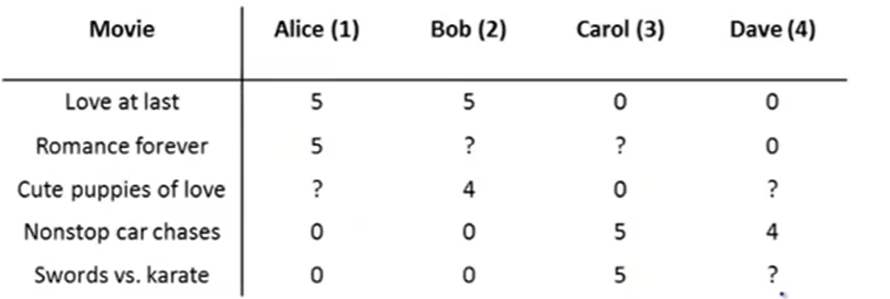
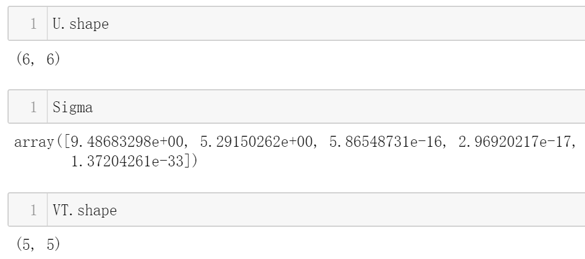
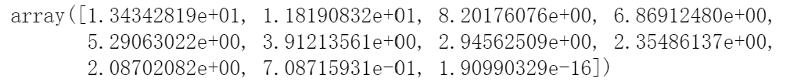
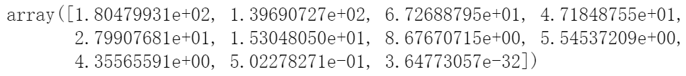
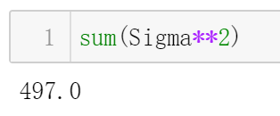
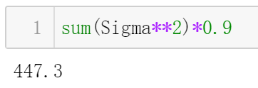
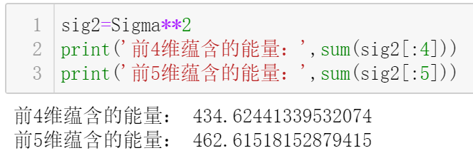

当SVD遇见CF
在之前的协同过滤算法中，我们使用了共现矩阵：

共现矩阵中每一个元素是特定用户对于特定物品(这里是电影)的打分。
但这存在一个问题：算法头部效应较明显，导致模型泛化能力较弱。具体来说，热门物品容易跟大量物品产生相似性，而尾部的物品由于其特征向量较稀疏，很少与其它物品产生相似性，从而很少被推荐。
一种比较好用的方法是，通过矩阵分解技术获取隐向量，用更稠密的隐向量来替代之前共现矩阵中对应的行(用户)和列（物品）组成的向量，从而加强了协同过滤模型处理稀疏矩阵的能力，提升了模型的泛化能力。
矩阵分解方法较多，比如梯度下降，SVD等.
隐向量的维度可自行设定或根据一定的规则确定(稍后就会看到)，每一个维度都代表一种具体的含义。比如在之前举过的栗子中，每部电影的特征由一个二维向量来表示，两个维度分别代表了该电影中爱情元素和动作元素的含量；同样，每个用户也由一个二维向量来表示，两个维度分别代表该用户对于爱情元素和动作元素所喜爱的程度。其中所提及的二维向量，本质上就是隐向量。
回忆一下，在上面的栗子中，我们采用了梯度下降的方法来获取隐向量。
在接下来，你将看到另一种获取隐向量的方法：奇异值分解(SVD).
注意：在用户数或物品数量不大的情况下，基于SVD获取隐向量的方式是比较合适的，但当用户数或物品数达到百万、千万级别时，SVD的计算复杂度会很高；而且，SVD要求原始的共现矩阵是稠密的，但互联网场景下大部分用户的历史行为非常少，举个可能不太恰当的栗子，比如某网上商城共5000万条物品，但用户浏览/点击/购买的顶多可能就100条，这导致用户-物品之间的共现矩阵非常稀疏(只有极个别位置才有数据)，此时若想使用SVD，就得想办法填充缺失值。
由于SVD的以上缺陷，梯度下降法成为了矩阵分解的主要方法。关于该方法的具体应用，我们之前已经讲过了，可以回头查看下(传送门)。
虽然事实如此，但作为学习，还是有必要了解一下基于SVD的矩阵分解技术在协同过滤中的应用的。
啰里啰唆一大堆，下面正文开始~
奇异值分解(SVD)
对于一个m*n的矩阵，通过SVD，可得到3个小的矩阵，即：
$$M_{mn}=U_{mm} \Sigma_{mn} V_{nn}$$
其中，$U$和$V$是正交矩阵，$\Sigma$是对角矩阵，对角线元素值从左到右，从大到小依次递减。
这里举个栗子介绍如何通过Python来求解SVD：
首先创建一个矩阵：
1 | d=np.mat([[0,0,0,2,2],[0,0,0,3,3],[0,0,0,1,1],[2,2,2,0,0],[5,5,5,0,0],[1,1,1,0,0]]) |
这是一个6*5的矩阵：
1 | [[0 0 0 2 2] |
然后对该矩阵进行SVD：
1 | from scipy import linalg as la |

注意，原本期望输出的$\Sigma$如下：
1 | #为了方便展示，去掉了部分小数位，你知道就好~~~ |
但由于对角矩阵除了对角线外其余位置元素都是0，因此$\Sigma$仅仅返回对角线上的元素，这样做能够节省空间。
Python实现基于协同过滤算法的菜品推荐系统
在讲解如何将SVD应用到协同过滤算法之前，先来搭建一个基于传统协同过滤算法的菜品推荐系统。
然后，将SVD引入该菜品推荐系统。
假设有一餐馆，共5种不同的菜品，至今为止，共有7个客人的用餐信息。该餐馆想搭建一个推荐系统，当回头客来用餐时，希望能够根据该客人的历史用餐情况，自动推荐合适的菜品。
根据以上数据，可以得到客人-菜品的共现矩阵，假设是这样的：
1 | [[4 4 0 2 2] |
其中元素位0的位置代表对应的客人还未曾对相应菜品进行打分，非0元素代表对应的客人对于相应菜品的打分。
对于餐馆来说，菜品数往往是小于客人数的，因此，我们选取基于物品的协同过滤算法(计算物品之间两两相似度)，这样做能够降低共现矩阵的大小，减少存储/计算开销。
现在来写代码搭建菜品推荐系统，然后使用该推荐系统预测客人未曾打分的菜品的打分值，根据预测打分值从高到低进行菜品推荐。
首先实现打分预测函数：
1 | import numpy as np |
dataMat就是共现矩阵，user是客人，item是菜品，simMeas是相似度度量方法，这里使用余弦相似度，代码如下：
1 | def cosSim(inA,inB): |
standEst的作用是预测客人user对于菜品item的打分值。详细解释请看代码注释。
有了打分值预测的函数，就可以实现推荐入口了：
1 | def recommend(dataMat,user,N=3,simMeas=cosSim,estMethod=standEst): |
该函数寻找客人user未曾打分的全部菜品，然后预测打分值，并按照分支从高到底排序，选择预测打分值最高的前N个菜品，推荐给客人user.
尝试调用该函数，为第2个客人进行推荐。第二个客人对于全部菜品的打分情况如下：
1 | [4, 0, 0, 1, 1], |
开始推荐：
1 | recommend(dataMat,user=2) |
输出：
1 | [(2, 2.5), (1, 2.0243290220056256)] |
这表明，该推荐系统将为第2个客人推荐菜品2和菜品1，对应的预测评分值分别是2.5和2.0243.
SVD在协同过滤中的应用
实际情况中，共现矩阵是很稀疏的。在这一部分，假设共现矩阵如下：
1 | matrix([[2, 0, 0, 4, 4, 0, 0, 0, 0, 0, 0], |
这是一个11*11的矩阵，和之前一样，行代表客人，列代表菜品。
将SVD应用于协同过滤算法的思想是，使用SVD对共现矩阵进行分解，然后将客人(共现矩阵的一行)向量转换到另一个向量的空间中，或将菜品(共现矩阵的一列)向量转换到另一个向量空间中。
这里，另一个向量空间对于客人和菜品来说是同一个，这也就是隐向量所在空间。
一般来说，隐向量的维度可以根据$\Sigma$对角线元素来确定。
对角线元素值就是奇异值，奇异值中包含的信息能够代表整个矩阵的信息。将这些信息看作能量值，那么整个矩阵包含的信息就是总能量值。
为了使得隐向量的维度低一些，我们可以考虑只取总能量的部分，比如90%，用损耗10%的代价换取更低的隐向量维度。
既然奇异值中包含的信息能够代表整个矩阵的信息，那么很自然的，可以用奇异值的大小来衡量能量值的大小。
具体到上面的栗子，首先对共现矩阵做SVD，得到$U$，$V$以及$\Sigma$.
$\Sigma$如下：

求平方如下：

总能量如下：

90%的能量如下：

确定合适的隐向量维度：

可以看到，前5维就蕴含了总能量的90+%，因此我们可以只取5维作为隐向量的维度。
在之前打分值预测函数standEst的基础上，稍加修改就得到了基于SVD的打分值预测函数svdEst：
1 | def svdEst(dataMat,user,simMeas,item): |
其中的xforedItems指的是转换后菜品的隐向量，它的维度是11*5的，11代表共11个不同的菜品，5代表每个菜品的特征向量的维度(也就是隐向量的维度)。
这里的栗子中，客人数和菜品数都是11，可能看起来没那么清晰，所以下面举个客人数不等于菜品数的栗子，相信看过之后一切都清楚了：
1 | #为了方便观察，假设共11个用户，6个物品 |
测试一下，对客人10做推荐。客人10的相关信息如下：
1 | [0, 0, 0, 3, 0, 0, 0, 0, 4, 5, 0], |
开始推荐：
1 | recommend(dataMat,user=10,estMethod=svdEst) |
输出推荐结果：
1 | [(7, 1.941290911249691), (10, 1.9353594511741503)] |
结果表明，应该向客人10推荐的Top-2菜品为：菜品7和菜品10，对应预测打分值分别为1.941和1.935.
总结
传统的协同过滤算法基于共现矩阵计算物品之间的相似度。由于每个用户对于每个物品的打分情况是不一样的，有的用户只对物品1 和物品2打了分，有的用户只对物品2和物品3打了分，类似情况有很多，因此在计算两个物品的相似度时，需要将同时对这两个物品进行了打分的用户筛选出来，假设共m个用户，那么用于计算这两个物品相似度的向量的维度就是m。而对于另外两个物品，同时对另外这两个物品打分的用户数可能是n，从而用于计算另外这两个物品相似度的向量的维度是n.
而通过矩阵分解方法得到用户或物品的隐向量的维度是固定的，因此在用隐向量计算相似度时，不需要像上面那样寻找同时对两个物品进行了打分的用户。而且，由于隐向量的维度一般是低于传统的协同过滤算法中使用的向量维度的，因此也在一定程度上减少了计算开销；隐向量的获取过程可以看作是对于包含全局信息的共现矩阵的拟合，因此也能降低过拟合风险，提升模型的泛化能力。
隐向量可以通过矩阵分解的方法进行获取。矩阵分解方法有很多，本文介绍了SVD，但这种方法要求原始的共现矩阵是稠密的，而且当用户数和物品数数量级达到百万、千万级别时，计算开销会非常大。于是，梯度下降法成为了矩阵分解的主要方法。